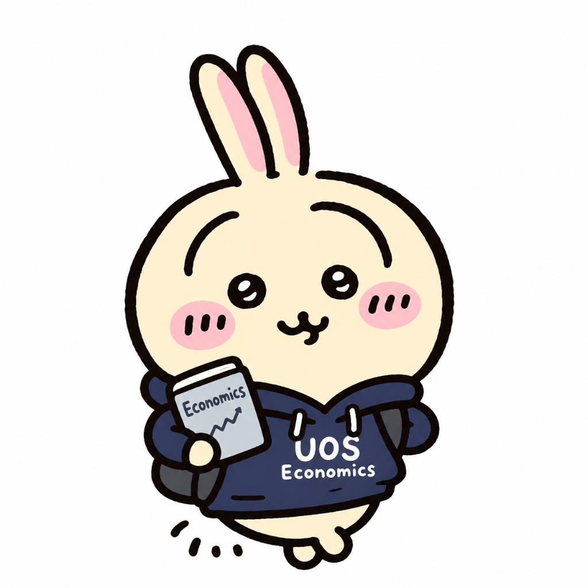

오 형 진 (Hyeongjin Oh)
서울시립대학교 일반대학원 경제학과 석사과정

서울시립대학교 경제학과 석사과정에서 계량경제학(Econometrics)과 머신러닝(Machine Learning)을 공부하고 있습니다.
학부에서 경제학과 수학을 전공한 수리적 배경을 바탕으로, 이론적 계량 모형과 데이터 기반 기계학습 방법론을 융합한 인과추론(Causal Inference) 연구를 지향합니다.
Teaching Experience / 조교 활동
미시경제학1
Microeconomics I
계량경제학1
Econometrics I
재정학
Public Finance
경제학의 이해
Understanding Economics
Education / 학력
서울시립대학교 일반대학원
경제학과 석사과정
주요 관심분야: 계량경제학(Econometrics), 머신러닝(Machine Learning)
서울시립대학교 (UOS)
경제학 학사 (본전공) · 수학 학사 (복수전공)
해석학, 선형대수학, 수리통계학 등 엄밀한 수학적 기반 이수
Research Interests / 관심 연구 분야
계량경제학 & 인과추론
Econometrics & Causal Inference
미시 실증 분석 및 정책 평가에서 발생하는 내생성 문제를 해결하기 위한 이론적 계량 모형과 인과추론 방법론을 탐구합니다.
경제학 머신러닝 & 알고리즘
Machine Learning in Economics
고차원 데이터 환경에서 유연한 예측력을 제공하는 기계학습 알고리즘을 계량 모형과 결합하여 이질적 처치 효과를 분석합니다.